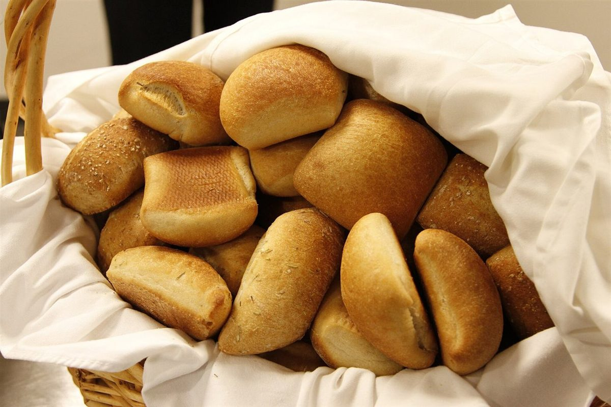

鼻先がさがす、パンのにおい。
制作側の連想
Museauから、鼻先を連想しました
「Museau」はフランス語で動物の鼻先を指す語だそうです。店名の由来は分かりません。制作側はこの語から、においをたどって歩く動物の鼻を連想し、このページを「くんくん帖」にしました。お店の理念・由来とは無関係の、制作側の連想です。
くんくん帖
パンのにおいを、六つに嗅ぎ分ける。
以下は制作側が想像したにおいの言葉で、お店の商品・製法を示すものではありません。写真は国外・撮影地不明のフリー素材です。
- 1

撮影地不明のイメージ 小麦こむぎ
穂のそばにありそうな、乾いた草のにおい。
想像の強さ
- 2

国外のイメージ(北キプロス) 焦げ目こげめ
火の気配がする、香ばしさの強いにおい。
想像の強さ
- 3

撮影地不明のイメージ バターばたー
まるく、重たく、遠くからでも気づくにおい。
想像の強さ
- 4

撮影地不明のイメージ 酵母こうぼ
ほんのり酸っぱい、ゆっくり育つにおい。
想像の強さ
- 5

国外のイメージ(米国) ぬくもりぬくもり
布の下に残る、やわらかい湯気のにおい。
想像の強さ
- 6

国外のイメージ(米国) 焼き色やきいろ
いちばん最後に追いつく、こんがりのにおい。
想像の強さ
ご案内
お店のこと(確認できたものだけ)
| 所在地 | 〒390-0874 長野県松本市大手2丁目2−10 |
|---|---|
| 電話 | 0263-88-0333 |
| 営業時間 | 準備中 |
| 定休日 | 準備中 |
| ご予約 | 準備中 |
| 駐車場 | 準備中 |
| SNS | Instagram @museau_japon |